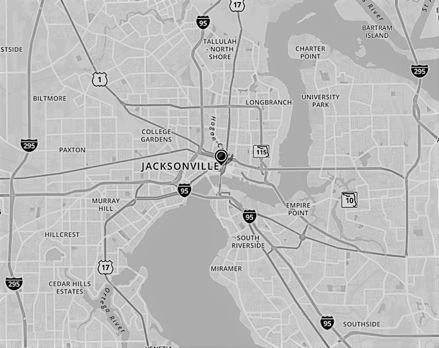

Introduction
Hello!
My name is Tina Johnson and I am a software developer from Jacksonville, Florida. I am currently a student looking to start a new career and I can not wait to learn the ins and outs of this exciting new field.
About Me
For the last 10 years I have been a pastry chef and, while I am proud of my career and the work I have done, I have made the decision to pursue a career in software engineering. Growing up, I was raised by my grandparents and my grandfather has been in IT since computers took up entire rooms and, as a Senior Programming Analyst, he has a real passion for his work. When I made the decision to change careers, the first thing I thought of was computer science because I know how much my grandfather loves it and I would hope to have even a fraction of his passion for my work.
I am now enrolled in college to receive my bachelors in Computer Science while also attending the Thinkful software engineering boot camp. The more I learn, the more I am seeing a satisfying and productive career ahead of me. As someone who both loves puzzles and being creative, I am loving the new challenges I am facing every day.
If you are looking for a new developer or have any learning opportunities to offer a student, please feel free to reach out to me. I can't wait to start working as a new professional in this field!
Contact
I would love to hear from you so feel free to contact or follow me:
